<title>Lusosofá</title>
<link rel="preconnect" href="https://fonts.googleapis.com">
<link rel="preconnect" href="https://fonts.gstatic.com" crossorigin>
<link rel="stylesheet" href="https://fonts.googleapis.com/css2?family=Marcellus&family=Jost:wght@300;400;500&display=swap">
<style>
  /* ───────────────────────────────────────────────────────────
     Lusosofá — proposta visual
     Mundo visual único e deliberado (preto + dourado da marca).
     Dourado exacto do logótipo: #84703F. A variante #C8B074 existe
     porque #84703F sobre preto dá 4,1:1 e chumba AA para texto.
     ─────────────────────────────────────────────────────────── */
  :root {
    --ink:        #0B0A08;   /* preto quente, enviesado para o dourado */
    --ink-2:      #131110;   /* superfície elevada */
    --ink-3:      #1C1916;   /* moldura interior */
    --gold:       #84703F;   /* dourado da marca, tal como está no logótipo */
    --gold-lit:   #C8B074;   /* dourado clareado — texto e links */
    --linen:      #EDE7DC;   /* passe-partout das molduras */
    --mist:       #A29886;   /* texto corrido, cinzento quente */
    --mist-dim:   #6E675C;

    --measure: 34rem;
    --gutter: clamp(1rem, 5vw, 5rem);
    --rule: 1px solid var(--gold);

    color-scheme: dark;
  }

  * { box-sizing: border-box; }

  body {
    margin: 0;
    background: var(--ink);
    color: var(--mist);
    font-family: "Jost", "Avenir Next", "Segoe UI", system-ui, sans-serif;
    font-weight: 300;
    font-size: clamp(1rem, 0.96rem + 0.2vw, 1.0625rem);
    line-height: 1.75;
    -webkit-font-smoothing: antialiased;
    overflow-x: hidden;
  }

  h1, h2, h3, .display {
    font-family: "Marcellus", "Hoefler Text", Georgia, serif;
    font-weight: 400;
    color: var(--linen);
    text-wrap: balance;
    line-height: 1.12;
    margin: 0;
  }

  p { margin: 0; }
  a { color: var(--gold-lit); text-decoration-color: color-mix(in srgb, var(--gold-lit) 45%, transparent); text-underline-offset: .28em; }
  a:hover { text-decoration-color: var(--gold-lit); }
  img { max-width: 100%; display: block; }

  :focus-visible { outline: 2px solid var(--gold-lit); outline-offset: 3px; }

  /* ── primitivos ─────────────────────────────────────────── */

  .wrap {
    max-width: 78rem;
    margin-inline: auto;
    padding-inline: var(--gutter);
  }

  .eyebrow {
    font-size: .72rem;
    letter-spacing: .28em;
    text-transform: uppercase;
    color: var(--gold-lit);
    font-weight: 400;
  }

  .lede { font-size: 1.15rem; line-height: 1.7; color: var(--mist); max-width: var(--measure); }

  .hairline {
    height: 1px;
    background: linear-gradient(90deg, var(--gold), color-mix(in srgb, var(--gold) 12%, transparent));
    transform-origin: left;
    border: 0;
    margin: 0;
  }

  section { padding-block: clamp(4.5rem, 10vw, 9rem); }

  /* ── cabeçalho ──────────────────────────────────────────── */

  .topbar {
    position: sticky;
    top: env(safe-area-inset-top, 0px);
    z-index: 50;
    background: color-mix(in srgb, var(--ink) 88%, transparent);
    backdrop-filter: blur(14px);
    border-bottom: 1px solid color-mix(in srgb, var(--gold) 22%, transparent);
  }
  .topbar .wrap {
    display: flex;
    align-items: center;
    justify-content: space-between;
    gap: 1.5rem;
    padding-block: .9rem;
  }
  .topbar img { width: 132px; }
  .nav { display: flex; gap: clamp(1rem, 3vw, 2.4rem); list-style: none; margin: 0; padding: 0; }
  .nav a {
    font-size: .76rem; letter-spacing: .18em; text-transform: uppercase;
    color: var(--mist); text-decoration: none; white-space: nowrap;
  }
  .nav a:hover { color: var(--gold-lit); }
  @media (max-width: 720px) { .nav { display: none; } }

  /* ── herói: campo preto + moldura, não fotografia de fundo ── */

  .hero { padding-block: clamp(3.5rem, 9vw, 7.5rem) clamp(4rem, 9vw, 8rem); }
  .hero .wrap {
    display: grid;
    grid-template-columns: minmax(0, 1.08fr) minmax(0, .92fr);
    gap: clamp(2.5rem, 6vw, 5rem);
    align-items: center;
  }
  @media (max-width: 860px) {
    .hero .wrap { grid-template-columns: 1fr; }
  }

  .hero h1 {
    font-size: clamp(2.6rem, 1.4rem + 5.4vw, 5.1rem);
    letter-spacing: -0.015em;
    margin-block: 1.6rem 1.75rem;
  }
  .hero h1 em { font-style: normal; color: var(--gold-lit); }

  .signature {
    font-family: "Marcellus", Georgia, serif;
    font-style: italic;
    color: var(--gold);
    font-size: .95rem;
    letter-spacing: .12em;
  }

  .hero-meta {
    display: flex; flex-wrap: wrap; gap: .6rem 1.6rem;
    margin-top: 2.5rem; padding-top: 1.5rem;
    border-top: 1px solid color-mix(in srgb, var(--gold) 28%, transparent);
    font-size: .78rem; letter-spacing: .16em; text-transform: uppercase; color: var(--mist-dim);
  }

  /* moldura: passe-partout claro + filete dourado.
     É o que resolve honestamente a fotografia de produto sobre fundo branco. */
  .frame {
    display: grid;
    background: var(--linen);
    padding: clamp(.75rem, 2vw, 1.15rem);
    box-shadow: 0 24px 60px -30px rgba(0,0,0,.9);
  }
  .frame > * { outline: 1px solid color-mix(in srgb, var(--gold) 55%, transparent); outline-offset: -1px; }
  .frame img { width: 100%; height: 100%; object-fit: cover; }

  .hero-frame { aspect-ratio: 3 / 4; }

  /* ── manifesto ──────────────────────────────────────────── */

  .manifesto .wrap { display: grid; gap: clamp(2rem, 5vw, 4rem); grid-template-columns: minmax(0,1fr); }
  @media (min-width: 900px) { .manifesto .wrap { grid-template-columns: 16rem minmax(0,1fr); } }
  .manifesto h2 { font-size: clamp(1.9rem, 1.2rem + 2.4vw, 3rem); margin-bottom: 1.4rem; }
  .manifesto .body { max-width: var(--measure); display: grid; gap: 1.4rem; }

  /* ── o trabalho confidencial ────────────────────────────── */

  .sealed { background: var(--ink-2); }
  .sealed h2 { font-size: clamp(1.9rem, 1.2rem + 2.4vw, 3rem); margin-block: 1.2rem 1.3rem; }
  .sealed-grid {
    margin-top: clamp(2.5rem, 6vw, 4rem);
    display: grid; gap: 1px;
    grid-template-columns: repeat(auto-fit, minmax(min(100%, 15rem), 1fr));
    background: color-mix(in srgb, var(--gold) 22%, transparent);
    border: 1px solid color-mix(in srgb, var(--gold) 22%, transparent);
  }
  .sealed-cell {
    background:
      repeating-linear-gradient(135deg, transparent 0 7px, rgba(132,112,63,.055) 7px 8px),
      var(--ink-3);
    padding: clamp(1.4rem, 3vw, 2rem);
    min-height: 12.5rem;
    display: flex; flex-direction: column; justify-content: space-between; gap: 2rem;
  }
  .sealed-cell .seal {
    width: 1.9rem; height: 1.9rem; border: var(--rule); border-radius: 50%;
    display: grid; place-items: center; color: var(--gold); font-size: .8rem;
  }
  .sealed-cell dt { font-family: "Marcellus", Georgia, serif; color: var(--linen); font-size: 1.22rem; }
  .sealed-cell dd { margin: .35rem 0 0; font-size: .82rem; letter-spacing: .06em; color: var(--mist-dim); }

  /* ── processo ───────────────────────────────────────────── */

  .steps { list-style: none; margin: clamp(2.5rem,6vw,4rem) 0 0; padding: 0; display: grid; gap: 1px;
           background: color-mix(in srgb, var(--gold) 20%, transparent); }
  @media (min-width: 880px) { .steps { grid-template-columns: repeat(4, 1fr); } }
  .steps li { background: var(--ink); padding: clamp(1.5rem, 3vw, 2.2rem); display: grid; gap: .75rem; align-content: start; }
  .steps .n { font-family: "Marcellus", Georgia, serif; color: var(--gold); font-size: .95rem; letter-spacing: .2em; }
  .steps h3 { font-size: 1.3rem; }
  .steps p { font-size: .94rem; line-height: 1.65; }

  /* ── ambientes ──────────────────────────────────────────── */

  .ambientes { background: var(--ink-2); }
  .amb-grid { margin-top: clamp(2.5rem,6vw,4rem); display: grid; gap: clamp(1rem, 2.5vw, 1.75rem);
              grid-template-columns: repeat(auto-fit, minmax(min(100%, 19rem), 1fr)); }
  .amb-grid figure { margin: 0; }
  .amb-grid .frame { aspect-ratio: 4 / 3; padding: .6rem; }
  .amb-grid figcaption { margin-top: .9rem; font-size: .8rem; letter-spacing: .16em; text-transform: uppercase; color: var(--mist-dim); }

  /* ── catálogo ───────────────────────────────────────────── */

  .cat-group + .cat-group { margin-top: clamp(3rem, 7vw, 5rem); }
  .cat-head { display: flex; align-items: baseline; gap: 1.25rem; margin-bottom: 1.75rem; }
  .cat-head h3 { font-size: 1.45rem; white-space: nowrap; }
  .cat-head .hairline { flex: 1; }
  .cat-grid { display: grid; gap: clamp(1.1rem, 2.5vw, 2rem);
              grid-template-columns: repeat(auto-fit, minmax(min(100%, 16rem), 1fr)); }

  .piece { display: grid; gap: .95rem; text-decoration: none; color: inherit; }
  .piece .frame { aspect-ratio: 4 / 3; overflow: hidden; transition: box-shadow .5s ease, transform .5s ease; }
  .piece .frame img { transition: transform .8s cubic-bezier(.2,.7,.2,1); }
  .piece:hover .frame { transform: translateY(-4px); box-shadow: 0 30px 70px -32px rgba(200,176,116,.42); }
  .piece:hover .frame img { transform: scale(1.045); }
  .piece h4 { font-family: "Marcellus", Georgia, serif; font-weight: 400; color: var(--linen); font-size: 1.12rem; margin: 0; }
  .piece .quote { font-size: .78rem; letter-spacing: .16em; text-transform: uppercase; color: var(--gold); }

  /* ── clientes ───────────────────────────────────────────── */

  .who-grid { margin-top: clamp(2.5rem,6vw,4rem); display: grid; gap: clamp(1.5rem,3vw,2.5rem);
              grid-template-columns: repeat(auto-fit, minmax(min(100%, 14rem), 1fr)); }
  .who-grid > div { border-top: var(--rule); padding-top: 1.25rem; display: grid; gap: .6rem; align-content: start; }
  .who-grid h3 { font-size: 1.22rem; }
  .who-grid p { font-size: .93rem; line-height: 1.65; }

  /* ── contactos ──────────────────────────────────────────── */

  .contacto { background: var(--ink-2); }
  .contacto .wrap { display: grid; gap: clamp(2.5rem, 6vw, 4.5rem); grid-template-columns: minmax(0,1fr); }
  @media (min-width: 900px) { .contacto .wrap { grid-template-columns: minmax(0,1.1fr) minmax(0,.9fr); } }
  .contacto h2 { font-size: clamp(1.9rem, 1.2rem + 2.4vw, 3rem); margin-block: 1.2rem 1.4rem; }
  .dl { display: grid; gap: 1.4rem; margin: 0; }
  .dl dt { font-size: .74rem; letter-spacing: .22em; text-transform: uppercase; color: var(--gold); }
  .dl dd { margin: .3rem 0 0; color: var(--linen); font-size: 1.05rem; }

  .cta {
    display: inline-block; margin-top: 2.5rem;
    border: var(--rule); color: var(--gold-lit); text-decoration: none;
    padding: .95rem 2.2rem;
    font-size: .78rem; letter-spacing: .22em; text-transform: uppercase;
    transition: background .4s ease, color .4s ease;
  }
  .cta:hover { background: var(--gold); color: var(--ink); }

  footer { border-top: 1px solid color-mix(in srgb, var(--gold) 22%, transparent); padding-block: 2.5rem; }
  footer .wrap { display: flex; flex-wrap: wrap; gap: 1rem 2rem; justify-content: space-between;
                 font-size: .78rem; letter-spacing: .1em; color: var(--mist-dim); }

  /* ── marcadores de revisão (não fazem parte do site) ────── */
  .tbc { border-bottom: 1px dotted var(--gold); cursor: help; }

  .notas { background: #07100D; border-top: 2px solid var(--gold); }
  .notas h2 { font-size: 1.5rem; color: var(--gold-lit); }
  .notas ol { max-width: 46rem; padding-left: 1.2rem; display: grid; gap: .85rem; margin: 1.75rem 0 0; }
  .notas li { font-size: .95rem; line-height: 1.65; }
  .notas strong { color: var(--linen); font-weight: 400; }

  /* ── movimento ──────────────────────────────────────────── */
  /* Estado em repouso = visível. O JS só entra se existir. */
  .js .reveal { opacity: 0; transform: translateY(22px); }
  .js .reveal.in { opacity: 1; transform: none; transition: opacity 1s ease, transform 1s cubic-bezier(.2,.7,.2,1); }
  .js .hairline { transform: scaleX(0); }
  .js .hairline.in { transform: scaleX(1); transition: transform 1.2s cubic-bezier(.2,.7,.2,1); }

  @media (prefers-reduced-motion: reduce) {
    .js .reveal, .js .hairline { opacity: 1 !important; transform: none !important; transition: none !important; }
    .piece .frame, .piece .frame img { transition: none !important; }
  }
</style>

<header class="topbar">
  <div class="wrap">
    <a href="#top" aria-label="Lusosofá — início">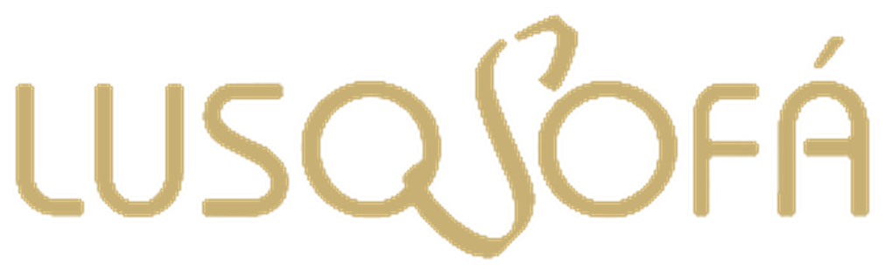</a>
    <nav aria-label="Principal">
      <ul class="nav">
        <li><a href="#casa">A casa</a></li>
        <li><a href="#oficio">O ofício</a></li>
        <li><a href="#catalogo">Catálogo</a></li>
        <li><a href="#clientes">Clientes</a></li>
        <li><a href="#contacto">Contacto</a></li>
      </ul>
    </nav>
  </div>
</header>

<main id="top">

  <!-- ─────────── HERÓI ─────────── -->
  <section class="hero">
    <div class="wrap">
      <div class="reveal">
        <p class="eyebrow">Estofos artesanais &middot; Figueiró, Portugal</p>
        <h1>Já se sentou<br>no nosso trabalho.<br><em>Só não sabia.</em></h1>
        <p class="lede">
          Há <span class="tbc" title="Ano de fundação por confirmar com o cliente">mais de duas décadas</span>
          que estofamos à mão para marcas que assinam o resultado. O nome na etiqueta é delas.
          As mãos, a estrutura e a costura são nossas.
        </p>
        <div class="hero-meta">
          <span>Peça a peça</span>
          <span>Medidas próprias</span>
          <span>Portugal &middot; Espanha</span>
        </div>
      </div>
      <div class="reveal">
        <div class="frame hero-frame">
          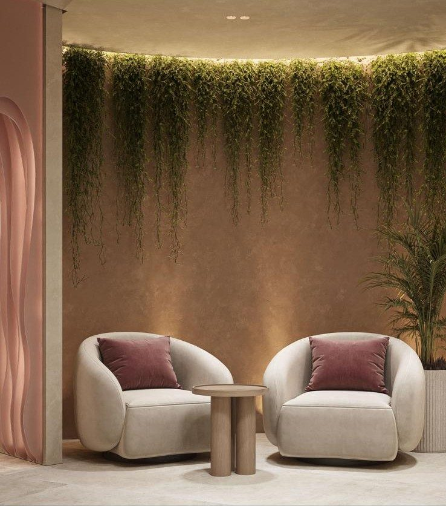
        </div>
        <p class="signature" style="margin-top:1.1rem; text-align:right;">feel the comfort</p>
      </div>
    </div>
  </section>

  <!-- ─────────── MANIFESTO ─────────── -->
  <section class="manifesto" id="casa">
    <div class="wrap">
      <div>
        <p class="eyebrow">A casa</p>
        <hr class="hairline" style="margin-top:1rem;">
      </div>
      <div class="body reveal">
        <h2>Uma oficina, não uma linha de montagem.</h2>
        <p>
          A Lusosofá nasceu em Figueiró e nunca saiu de lá. Trabalhamos por encomenda:
          cada sofá, cadeirão ou cabeceira é levantado sobre estrutura de madeira, enchido,
          costurado e acabado à mão, por pessoas que fazem isto há anos e que assinam o que fazem —
          mesmo quando a etiqueta final leva outro nome.
        </p>
        <p>
          Não temos catálogo fechado. Temos modelos que servem de ponto de partida e
          um ateliê que altera medidas, tecidos, densidades e acabamentos até a peça
          servir o espaço a que se destina.
        </p>
        <p>
          O mercado espanhol foi o primeiro a procurar-nos e continua a ser o mais antigo.
          Hoje trabalhamos para designers de interiores, hotelaria e restauração dos dois lados da fronteira.
        </p>
      </div>
    </div>
  </section>

  <!-- ─────────── O QUE NÃO PODEMOS MOSTRAR ─────────── -->
  <section class="sealed">
    <div class="wrap">
      <div class="reveal" style="max-width:var(--measure);">
        <p class="eyebrow">Confidencialidade</p>
        <h2>A maior parte do nosso trabalho não pode aparecer aqui.</h2>
        <p>
          Produzimos para marcas e projectos sob acordo de confidencialidade. Não publicamos
          as peças, os nomes nem os espaços. É uma limitação que aceitamos de bom grado:
          é exactamente por a cumprirmos que continuam a contar connosco.
        </p>
      </div>

      <div class="sealed-grid reveal" role="list">
        <div class="sealed-cell" role="listitem">
          <span class="seal" aria-hidden="true">&#9679;</span>
          <dl style="margin:0;">
            <dt>Marca de mobiliário</dt>
            <dd>Colecção completa &middot; produção contínua</dd>
          </dl>
        </div>
        <div class="sealed-cell" role="listitem">
          <span class="seal" aria-hidden="true">&#9679;</span>
          <dl style="margin:0;">
            <dt>Hotel de cinco estrelas</dt>
            <dd>Quartos e zonas comuns</dd>
          </dl>
        </div>
        <div class="sealed-cell" role="listitem">
          <span class="seal" aria-hidden="true">&#9679;</span>
          <dl style="margin:0;">
            <dt>Projecto de autor</dt>
            <dd>Peças únicas sobre desenho do atelier</dd>
          </dl>
        </div>
        <div class="sealed-cell" role="listitem">
          <span class="seal" aria-hidden="true">&#9679;</span>
          <dl style="margin:0;">
            <dt>Restauração</dt>
            <dd>Bancos corridos e cadeiras de sala</dd>
          </dl>
        </div>
      </div>
      <p style="margin-top:1.5rem; font-size:.84rem; letter-spacing:.06em; color:var(--mist-dim);">
        Sob acordo de confidencialidade. Referências disponíveis mediante contacto directo.
      </p>
    </div>
  </section>

  <!-- ─────────── O OFÍCIO ─────────── -->
  <section id="oficio">
    <div class="wrap">
      <div class="reveal" style="max-width:var(--measure);">
        <p class="eyebrow">O ofício</p>
        <h2 style="font-size:clamp(1.9rem,1.2rem + 2.4vw,3rem); margin-block:1.2rem 1.3rem;">
          Quatro etapas, nenhuma automatizada.
        </h2>
        <p>Cada peça passa pelas mesmas mãos do princípio ao fim. É mais lento. É por isso que dura.</p>
      </div>

      <ol class="steps reveal">
        <li>
          <span class="n">I</span>
          <h3>Estrutura</h3>
          <p>Madeira seca, cortada e montada à medida do modelo. É a peça que ninguém vê e a que decide se o sofá aguenta vinte anos.</p>
        </li>
        <li>
          <span class="n">II</span>
          <h3>Suspensão e enchimento</h3>
          <p>Molas, cinchas e espumas escolhidas por densidade conforme o uso — não é o mesmo encher um cadeirão de casa e um banco de restaurante.</p>
        </li>
        <li>
          <span class="n">III</span>
          <h3>Corte e costura</h3>
          <p>O tecido é cortado a seguir ao fio e costurado peça a peça. O capitoné, os pespontos e os canais são feitos à mão, um a um.</p>
        </li>
        <li>
          <span class="n">IV</span>
          <h3>Acabamento</h3>
          <p>Aplicação, pregaria, pés e revisão final. Sai da oficina quando está como sairia se fosse para nossa casa.</p>
        </li>
      </ol>
    </div>
  </section>

  <!-- ─────────── AMBIENTES ─────────── -->
  <section class="ambientes">
    <div class="wrap">
      <div class="reveal" style="max-width:var(--measure);">
        <p class="eyebrow">Colecção Traços</p>
        <h2 style="font-size:clamp(1.9rem,1.2rem + 2.4vw,3rem); margin-block:1.2rem 1.3rem;">
          Uma linha criada a pensar em si.
        </h2>
        <p>
          A colecção Traços demonstra a versatilidade e a elegância de uma linha desenhada
          para durar. O conforto aliado a um desenho contido, para fazer parte da sua casa.
          Deixe que o nosso traço embeleze o seu espaço.
        </p>
      </div>
      <div class="amb-grid reveal">
        <figure>
          <div class="frame">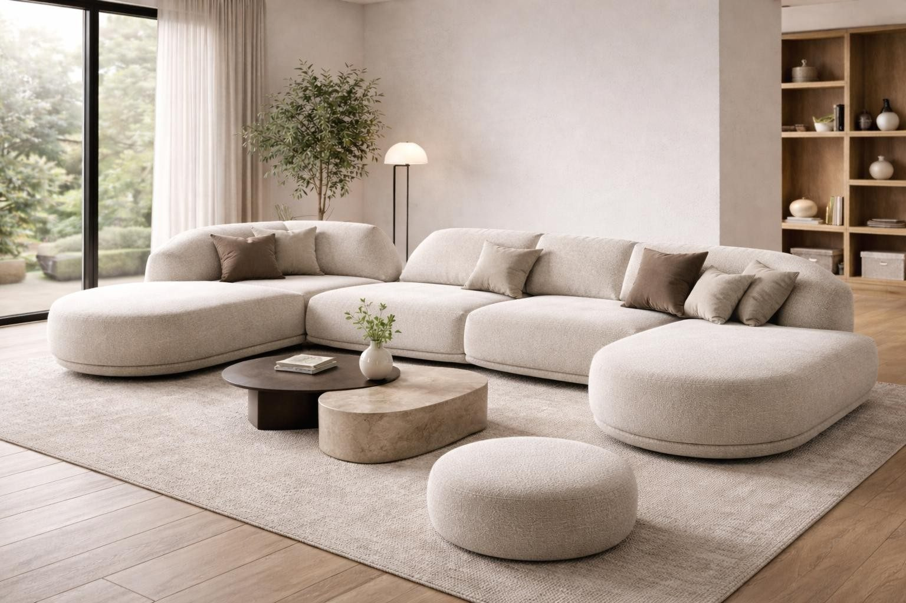</div>
          <figcaption>Modular &middot; sala</figcaption>
        </figure>
        <figure>
          <div class="frame">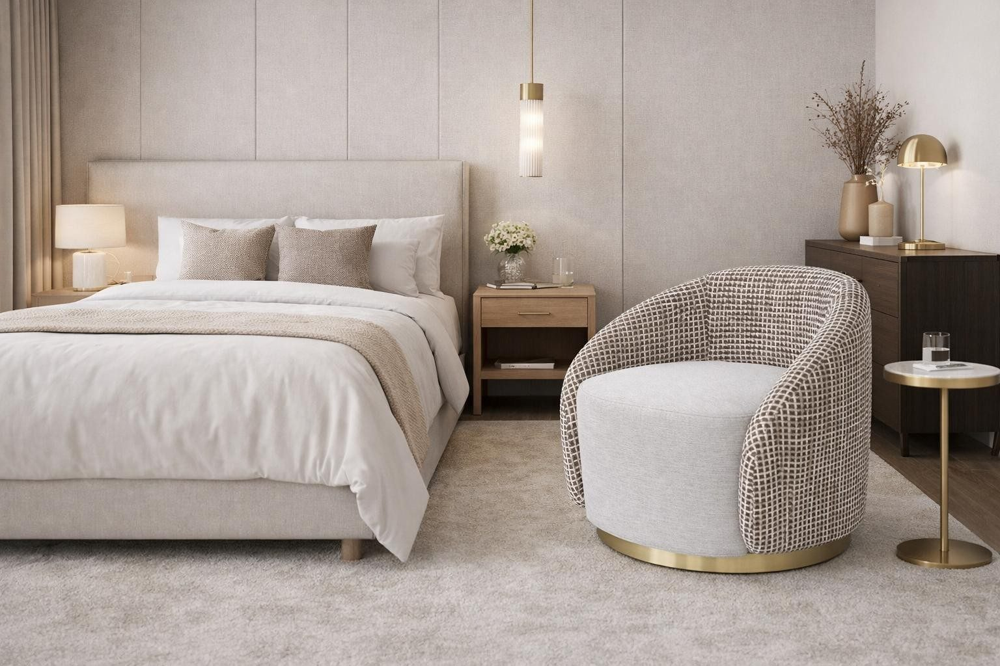</div>
          <figcaption>Cadeirão &middot; suite</figcaption>
        </figure>
        <figure>
          <div class="frame">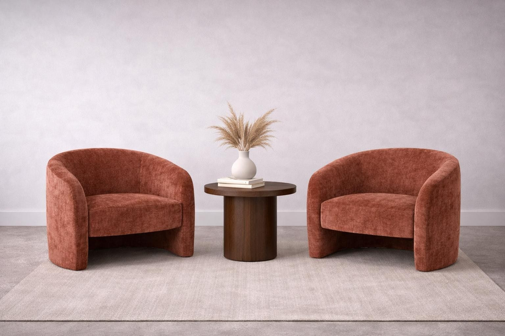</div>
          <figcaption>Par &middot; sala de estar</figcaption>
        </figure>
      </div>
    </div>
  </section>

  <!-- ─────────── CATÁLOGO ─────────── -->
  <section id="catalogo">
    <div class="wrap">
      <div class="reveal" style="max-width:var(--measure);">
        <p class="eyebrow">Catálogo</p>
        <h2 style="font-size:clamp(1.9rem,1.2rem + 2.4vw,3rem); margin-block:1.2rem 1.3rem;">
          Modelos disponíveis.
        </h2>
        <p>
          Cada modelo é um ponto de partida: medidas, tecido, densidade e acabamento
          definem-se consigo. Peça o orçamento e devolvemos proposta com tecidos à escolha.
        </p>
      </div>

      <div class="cat-group reveal">
        <div class="cat-head"><h3>Sofás e chaises</h3><hr class="hairline"></div>
        <div class="cat-grid">
          <a class="piece" href="#contacto">
            <div class="frame">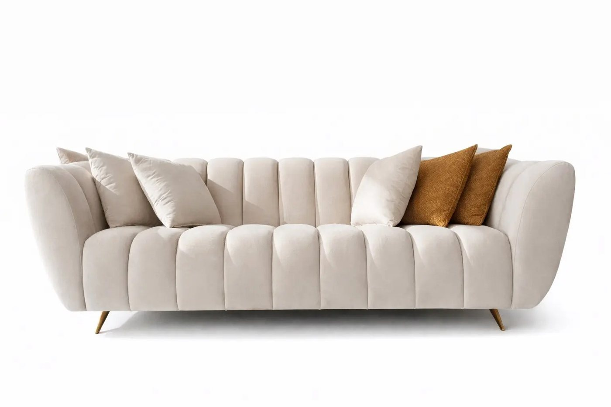</div>
            <h4>Sofá Sweet</h4><span class="quote">Pedir orçamento</span>
          </a>
          <a class="piece" href="#contacto">
            <div class="frame">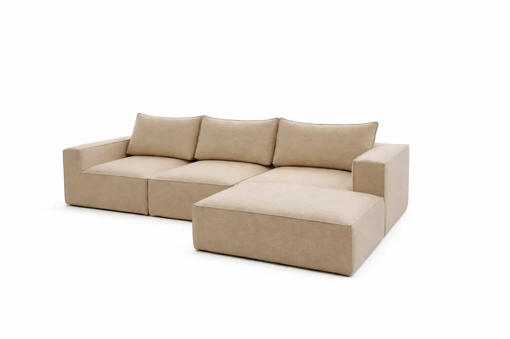</div>
            <h4>Bali Modular</h4><span class="quote">Pedir orçamento</span>
          </a>
          <a class="piece" href="#contacto">
            <div class="frame">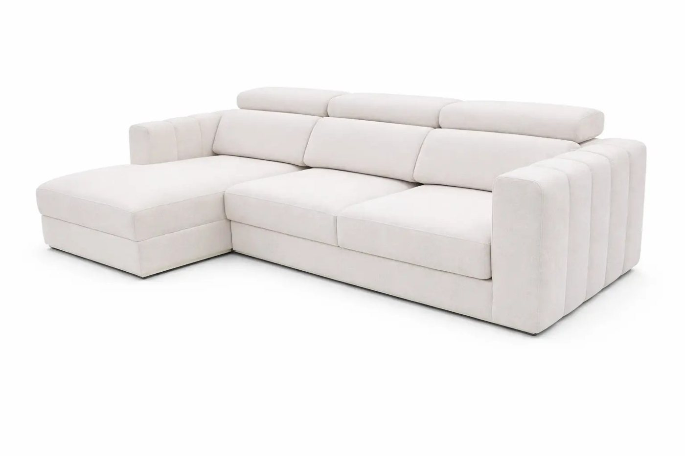</div>
            <h4>Chaiselong Kenedy</h4><span class="quote">Pedir orçamento</span>
          </a>
          <a class="piece" href="#contacto">
            <div class="frame">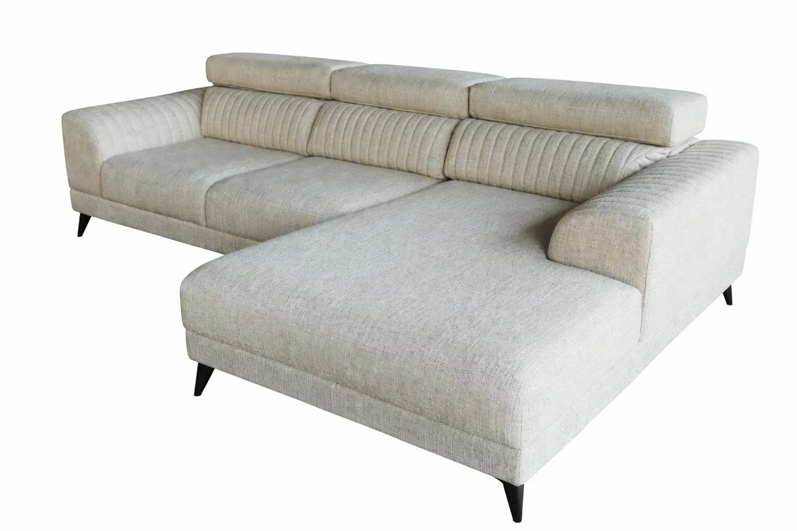</div>
            <h4>Chaiselong Singapura</h4><span class="quote">Pedir orçamento</span>
          </a>
        </div>
      </div>

      <div class="cat-group reveal">
        <div class="cat-head"><h3>Cadeirões</h3><hr class="hairline"></div>
        <div class="cat-grid">
          <a class="piece" href="#contacto">
            <div class="frame">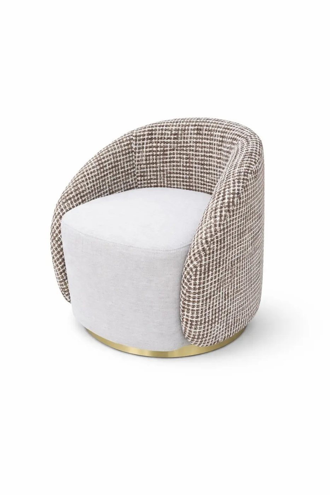</div>
            <h4>Cadeirão Emily</h4><span class="quote">Giratório</span>
          </a>
          <a class="piece" href="#contacto">
            <div class="frame">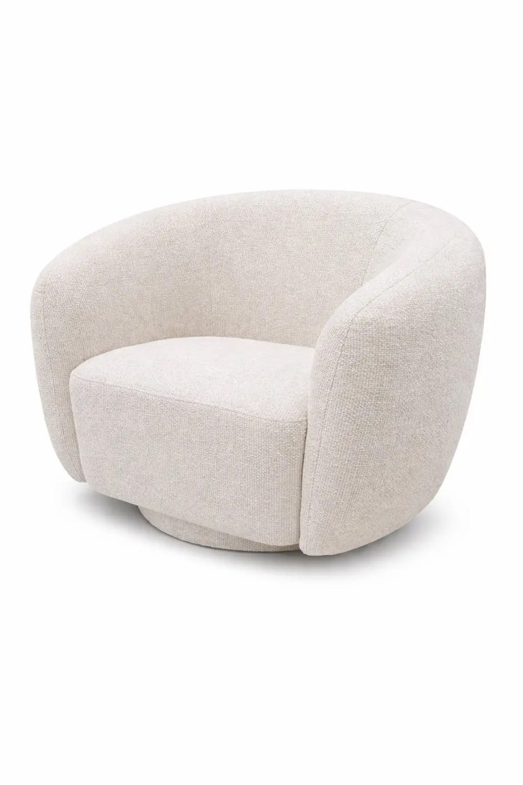</div>
            <h4>Cadeirão Sofy</h4><span class="quote">Giratório</span>
          </a>
          <a class="piece" href="#contacto">
            <div class="frame">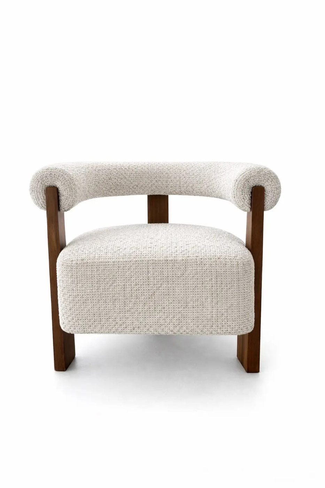</div>
            <h4>Cadeirão Oslo</h4><span class="quote">Estrutura em madeira</span>
          </a>
        </div>
      </div>

      <div class="cat-group reveal">
        <div class="cat-head"><h3>Camas e cabeceiras</h3><hr class="hairline"></div>
        <div class="cat-grid">
          <a class="piece" href="#contacto">
            <div class="frame">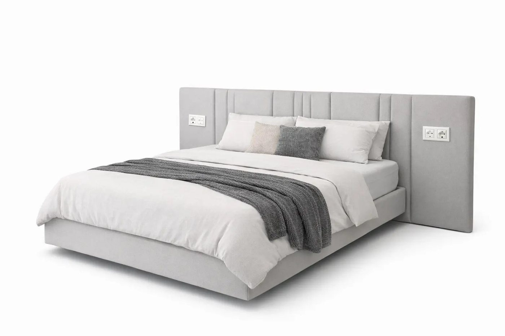</div>
            <h4>Cama Sally</h4><span class="quote">Pedir orçamento</span>
          </a>
          <a class="piece" href="#contacto">
            <div class="frame">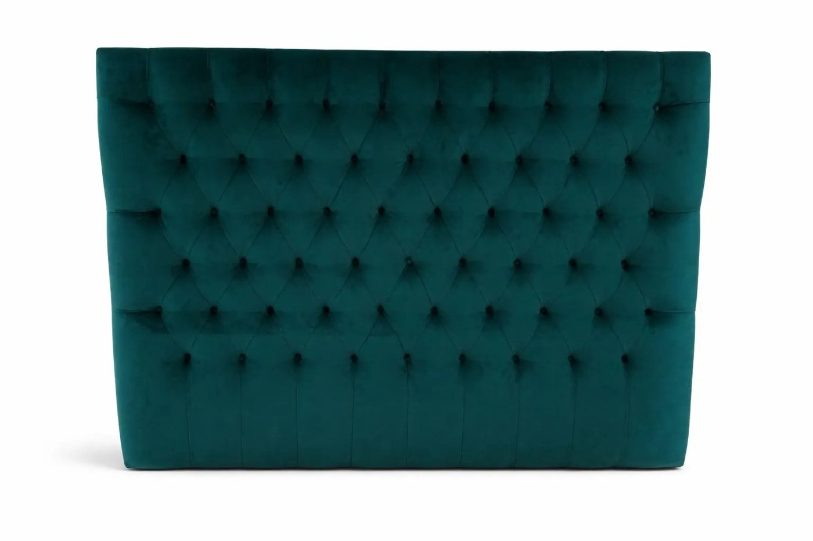</div>
            <h4>Cabeceira Capitoné</h4><span class="quote">Botão a botão</span>
          </a>
          <a class="piece" href="#contacto">
            <div class="frame">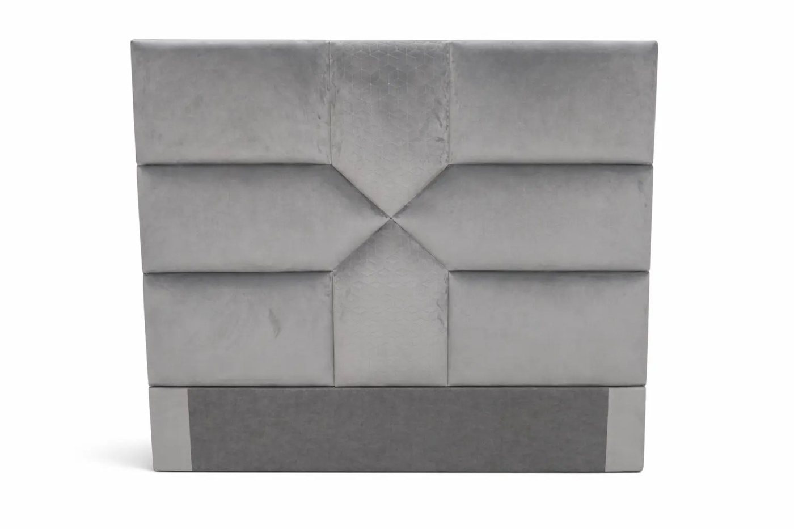</div>
            <h4>Cabeceira Moly</h4><span class="quote">Pedir orçamento</span>
          </a>
          <a class="piece" href="#contacto">
            <div class="frame">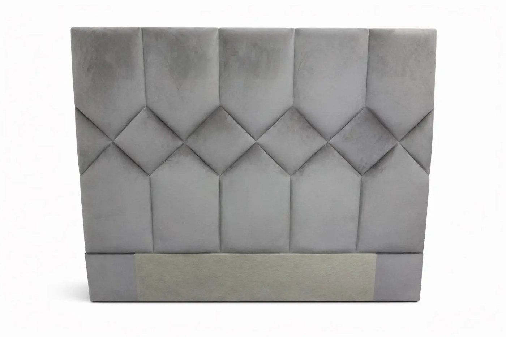</div>
            <h4>Cabeceira Ouros</h4><span class="quote">Pedir orçamento</span>
          </a>
          <a class="piece" href="#contacto">
            <div class="frame">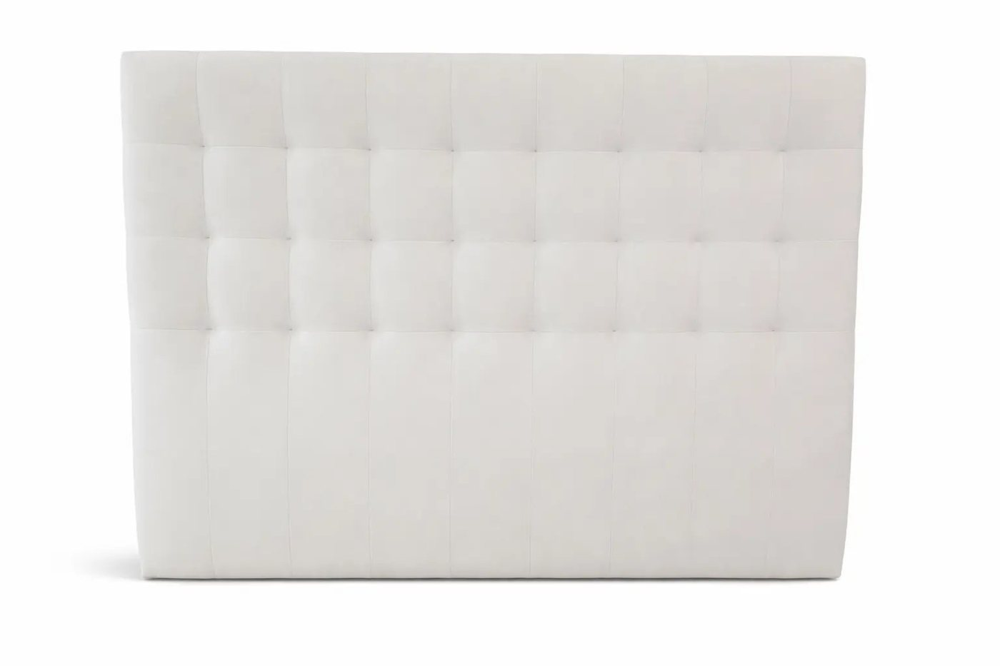</div>
            <h4>Cabeceira Quadrados Puxados</h4><span class="quote">Pedir orçamento</span>
          </a>
        </div>
      </div>
    </div>
  </section>

  <!-- ─────────── CLIENTES ─────────── -->
  <section id="clientes">
    <div class="wrap">
      <div class="reveal" style="max-width:var(--measure);">
        <p class="eyebrow">Para quem trabalhamos</p>
        <h2 style="font-size:clamp(1.9rem,1.2rem + 2.4vw,3rem); margin-block:1.2rem 1.3rem;">
          Quem nos procura sabe o que quer.
        </h2>
      </div>
      <div class="who-grid reveal">
        <div>
          <h3>Designers de interiores</h3>
          <p>Executamos sobre o seu desenho. Envia o projecto, devolvemos protótipo e ficha técnica antes de produzir.</p>
        </div>
        <div>
          <h3>Hotelaria</h3>
          <p>Séries repetíveis com o mesmo acabamento do primeiro ao último quarto, em espumas de uso intensivo.</p>
        </div>
        <div>
          <h3>Restauração</h3>
          <p>Bancos corridos, cadeiras e reestofo de sala, com tecidos preparados para lavagem e desgaste diário.</p>
        </div>
        <div>
          <h3>Particulares</h3>
          <p>Peças únicas e reestofo de mobiliário de família, com a mesma exigência de qualquer encomenda de marca.</p>
        </div>
      </div>
    </div>
  </section>

  <!-- ─────────── CONTACTO ─────────── -->
  <section class="contacto" id="contacto">
    <div class="wrap">
      <div class="reveal">
        <p class="eyebrow">Contacto</p>
        <h2>Diga-nos o que precisa.</h2>
        <p class="lede">
          Para orçamento, indique o modelo ou envie o desenho, as medidas e o destino da peça —
          casa, hotel ou restaurante. Respondemos com proposta e amostras de tecido.
        </p>
        <a class="cta" href="mailto:lusosofa@gmail.com?subject=Pedido%20de%20or%C3%A7amento">Pedir orçamento</a>
      </div>
      <div class="reveal">
        <dl class="dl">
          <div>
            <dt>Oficina</dt>
            <dd><span class="tbc" title="Morada por confirmar: a morada fiscal no CRM é Avenida da Liberdade 209, mas o site actual diz Rua do Porto 94">Rua do Porto, 94 &middot; Figueiró</span><br>Portugal</dd>
          </div>
          <div>
            <dt>Telefone</dt>
            <dd><a href="tel:+351255181731">+351 255 181 731</a></dd>
          </div>
          <div>
            <dt>Email</dt>
            <dd><a href="mailto:lusosofa@gmail.com">lusosofa@gmail.com</a></dd>
          </div>
          <div>
            <dt>Contribuinte</dt>
            <dd>516 435 337</dd>
          </div>
        </dl>
      </div>
    </div>
  </section>
</main>

<footer>
  <div class="wrap">
    <span>Lusosofá &middot; Feel the Confort, Lda.</span>
    <span>Figueiró, Portugal</span>
  </div>
</footer>

<!-- ─────────── Notas de produção — não faz parte do site ─────────── -->
<section class="notas">
  <div class="wrap">
    <p class="eyebrow" style="color:var(--gold);">Interno &middot; remover antes de publicar</p>
    <h2 style="margin-top:.8rem;">Notas de produção</h2>
    <ol>
      <li><strong>Sublinhados a ponteado</strong> marcam o que está por confirmar com o cliente: o número de anos de casa e a morada (o CRM diz Avenida da Liberdade 209; o site actual diz Rua do Porto 94; os telefones também divergem).</li>
      <li><strong>Sem preços.</strong> Os 12 produtos estão a 0,00&nbsp;€ no Odoo e não há nenhum meio de pagamento activo, por isso o catálogo está desenhado para pedido de orçamento. Se a loja for para vender mesmo, muda o botão e é preciso preços, portes e um provedor de pagamento.</li>
      <li><strong>Imagens.</strong> Os 12 produtos são os que já estão no Odoo. Os três ambientes vêm da pasta <code>imagens/</code>, recortados do enquadramento de telemóvel. A origem e os direitos destas fotografias precisam de confirmação antes de irem para produção.</li>
      <li><strong>A secção de confidencialidade</strong> é a aposta desta proposta: transforma a limitação de não poder mostrar trabalho no argumento mais forte da marca. Os quatro cartões são plausíveis mas genéricos — valem o que valerem até o cliente confirmar que sectores pode referir.</li>
      <li><strong>Ligações antigas.</strong> A homepage actual aponta para <code>/noa</code>, <code>/porto</code>, <code>/estoril</code> e <code>/alcanatara</code>, e as quatro dão 404. Ou se criam as páginas de modelo, ou se removem os links.</li>
    </ol>
  </div>
</section>

<script>
  document.documentElement.classList.add('js');
  (function () {
    var targets = document.querySelectorAll('.reveal, .hairline');
    if (!('IntersectionObserver' in window)) {
      targets.forEach(function (el) { el.classList.add('in'); });
      return;
    }
    var io = new IntersectionObserver(function (entries) {
      entries.forEach(function (e) {
        if (!e.isIntersecting) return;
        var el = e.target;
        var delay = el.classList.contains('hairline') ? 120 : 0;
        setTimeout(function () { el.classList.add('in'); }, delay);
        io.unobserve(el);
      });
    }, { rootMargin: '0px 0px -8% 0px', threshold: 0.08 });
    targets.forEach(function (el) { io.observe(el); });

    // Salvaguarda: o que estiver visível ao carregar entra já.
    requestAnimationFrame(function () {
      targets.forEach(function (el) {
        var r = el.getBoundingClientRect();
        if (r.top < window.innerHeight) { el.classList.add('in'); io.unobserve(el); }
      });
    });
  })();
</script>
